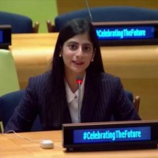

Women’s voice at the UN
Youth representative, New York (2024). Advocating meaningful participation for young women globally.
Woman empowerment specialist United Nations · PMYP · PSTD
Elevating women & youth through voice, equity, and global leadership
I help women and young people show up with confidence and clarity—through DE&I conferences, personal branding, and policy platforms from PSTD to the United Nations, as PMYP Focal Person for Global Youth Affairs.

A woman empowerment specialist who turns visibility into voice—and voice into opportunity.
Bisma Qamar is a Pakistani woman empowerment specialist, communications leader, and youth diplomat with an MBA from IoBM (2022–2024). She designs spaces where women and young people are heard—not sidelined— from Pakistan’s largest DE&I conferences to the United Nations.
Her work spans gender-inclusive education, authentic personal branding (University of Karachi MediaVerse, Nov 2024), workplace equity writing, and PMYP–UN engagement—including ECOSOC Youth Forum 2026 and interviews with Ambassador Munir Akram and Dr. Felipe Paullier (UN ASG for Youth).
Youth representative, New York (2024). Advocating meaningful participation for young women globally.
Led communications for Pakistan’s largest inclusion conferences—2,500+ participants, 300+ orgs.
Co-founded Awaz e Bezuban—350+ interns, workshops for schools & colleges (2019–2024).
Women empowerment · Gender-inclusive leadership
Aligned with UN principles on youth participation and equal opportunity—delivered through training, DE&I, and global platforms.
University sessions & corporate workshops—authentic presence, elevator pitches, and storytelling without performance.
WIBCON Islamabad & Lahore—frameworks for corporate & academic inclusion across the region.
LinkedIn focus: education equity, youth upskilling, and bridging talent with opportunity.
IDN on ageism & IPS on self-awareness—championing fair, psychologically safe workplaces.
PMYP & UN forums—ensuring young women’s voices shape policy, not just attend it.
350+ interns through welfare leadership; ongoing commitment to underserved youth.
“Her presence reminded us of the power of mentorship, storytelling, and standing out with purpose.” — MediaVerse, University of Karachi (2024)


Focal Person — Global Youth Affairs & UN Engagement
Nominated to the Chairman of PMYP. Coordinates Pakistan’s youth engagement with the UN and international youth forums.
Press coverage →
Head of conferences & global learning · Comms Lead, L&D
Jan 2024 – present · Karachi. Pakistan’s premier training society (est. 1966).
bisma.qamar@pstd.com.pk →Youth Representative — National Youth Council
Jun – Oct 2024 · New York. IYC representative during the Pact for the Future / Summit of the Future.
Young women belong in the room—where decisions about their future are made
Interview with H.E. Munir Akram, Ambassador of Pakistan to the United Nations — on bridging the gap between youth resources and aspirations.
Click a milestone to expand
ECOSOC Youth Forum delegation (Apr). IPS interview with UN ASG for Youth (May). PMYP focal person for global youth affairs & UN.
UN National Youth Council rep (Jun–Oct). PSTD Comms Lead. Summit of the Future / Amb. Akram interview. UoK MediaVerse (5 Nov). IPS Aug 2024 article.
Brand & Campaigns at Retailo, Riyadh (Apr 2022 – Nov 2023). MBA IoBM (2022–2024).
Co-founded Awaz e Bezuban (Aug 2019). Daraz brands & campaigns. Hunar Foundation project. Merit scholarship Sep 2021.
IPS · IDN-InDepthNews
Interview — Dr. Felipe Paullier, UN ASG for Youth
Inter Press Service 2024Interview — H.E. Munir Akram, Pakistan at the UN
IDN-InDepthNews Aug 2024Op-ed on unlocking youth opportunity
Inter Press Service 2024Workplace equity & mental wellness
IDN-InDepthNewsTalks, interviews, and moments from the field.
Women’s leadership workshops, DE&I partnerships, media, or UN–youth collaborations.